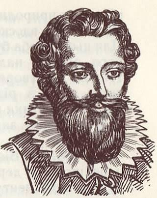

Від стародавніх секретів до сучасної символьної мови
🪶
Франсуа Вієт
Батько символьної алгебри та королівський дешифрувальник.
📐
Рене Декарт
Філософія дискримінанта та аналітична геометрія.
Франсуа Вієт: Творець символьної мови
Життя та наукова спадщина видатного француза

Портрет Франсуа Вієта (1540–1603)
Франсуа Вієт народився 1540 року на півдні Франції в містечку Фонтене-ле-Конт у родині прокурора. Продовжуючи сімейну традицію, він вивчав право в університеті Пуатьє, де у 20 років отримав ступінь бакалавра юридичних наук. Проте його справжня пристрасть завжди належала "цариці наук".
📜 Історична довідка: Королівський дешифрувальник
Вієт служив радником королів Генріха III та Генріха IV. Під час війни з Іспанією він врятував Францію не зброєю, а розумом. Іспанці використовували шифр із 500 символів, який Вієт розгадав за 15 днів. Отримавши таку перевагу, Франція знала кожен крок ворога. Розлючений іспанський король навіть подав скаргу Папі Римському, вимагаючи суду над "чаклуном" Вієтом.
Математичний прорив
До Вієта алгебра була "геометричною" або "словесною". Рівняння записували цілими реченнями, що робило розв'язання довгим і заплутаним. Вієт зробив революційний крок — він почав використовувати літери не лише для невідомих, а й для відомих величин (параметрів).
x₁ + x₂ = -p
x₁ · x₂ = q
💡 Важливо знати
Саме завдяки Вієту алгебра відокремилася від геометрії. Його система дозволила вивчати властивості рівнянь у загальному вигляді, незалежно від конкретних чисел. Це стало фундаментом для всього подальшого розвитку науки.
📋 Цікавий факт
Вієт був неймовірно працездатним. Кажуть, що коли він захоплювався якоюсь проблемою, він міг не спати й не їсти по три доби поспіль, повністю занурившись у розрахунки.
Рене Декарт та Дискримінант
Філософія точності та аналітична геометрія
Рене Декарт (1596–1650)
Рене Декарт — людина, яка навчила світ сумніватися у всьому, крім математики. Він народився в 1596 році. У дитинстві Рене мав дуже слабке здоров’я, через що в коледжі Ла-Флеш йому офіційно дозволяли лежати в ліжку до обіду. Ці години "лінивих" роздумів стали найпродуктивнішими в його житті.
Етимологія та зміст
Слово "дискримінант" походить від латинського discriminans, що означає "розрізняти". Ця назва ідеально відображає його суть — він "розрізняє" випадки розташування параболи відносно осі абсцис.
D = b² - 4ac
📜 Геометричний зв'язок
Декарт заснував аналітичну геометрію. Завдяки йому ми знаємо:
Якщо D > 0: Парабола перетинає вісь X у двох точках.
Якщо D = 0: Парабола лише торкається осі в одній точці.
Якщо D < 0: Парабола "летить" над або під віссю, не торкаючись її.
📋 Цікавий факт: Останні дні
Декарт помер у Швеції. Королева Крістіна запросила його бути її вчителем, але змушувала займатися о 5-й ранку в холодному замку. Для Декарта, який все життя звик працювати в теплому ліжку, це виявилося фатальним — він застудився і помер від пневмонії.
"Мислю, отже існую" (Cogito, ergo sum) — головний принцип Декарта, який він застосовував і в математиці, прагнучи до абсолютної доведеності кожного кроку.